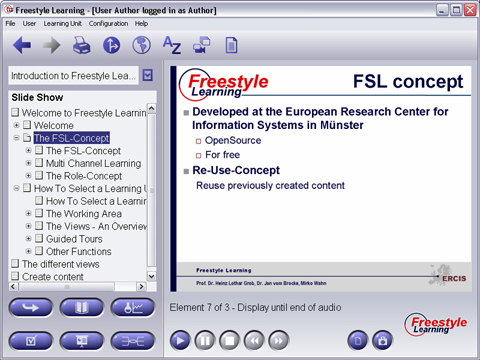

In the Slide Show View you can join virtual lectures. Each Slide Show Element contains several Slide Elements as child nodes. Just select the Slide Show Element and press the Play button from the Interaction Panel to start listening to the author explaining the slides presented. Select any Slide Show element from the Structure Tree and press the Play button to start presentation. During presentation you may press the Pause or Stop button to reset the Slide Show. Press the Previous- and Next-buttons from the Interaction Panel to move forward or backward within any presentation.

View Specific Interaction Buttons
|
Play | Start playing a selected presentation |
|
Pause | Pause presentation while playing |
|
Stop | Stop and reset presentation |
|
Previous/Next Slide | Move to previous / next slide during presentation |
Back to Main Help Page